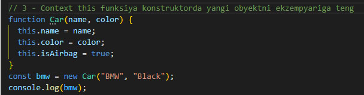
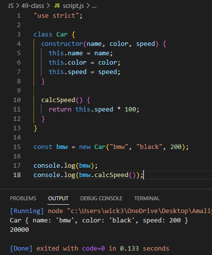
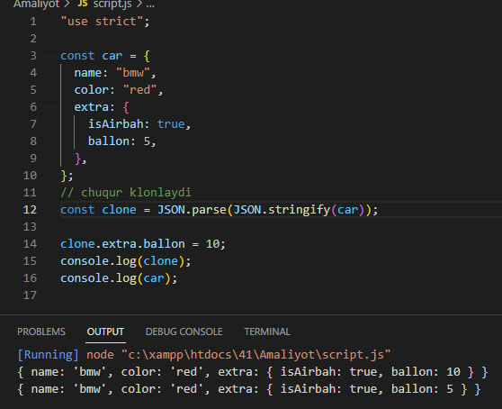
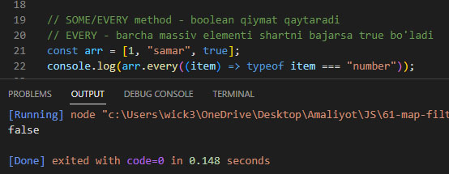
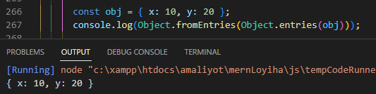
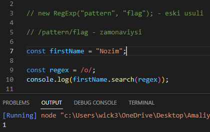

VSCode Extensions
1) All Autocomplete
2) Auto Close Tag
3) Auto Complete Tag
4) Auto Rename Tag
5) Bracket Pair Colorizer 2
6) Code Runner
7) CSS Peek
8) Import Cost
9) indent-rainbow
10) IntelliSense for CSS class names in HTML
11) JavaScript (ES6) code snippets
12) Live Sass Compiler
13) sass
14) Live Server
15) Path Autocomplete
16) Path Intellisense
17) Prettier - Code formatter
17) Reactjs code snippets
18) Theme - Oceanic Next
"use strict"
Funksiya ko'rinishidagi: (function () {'use strict';}());
"use strict"; (tarjima: "qat'iy foydalaning") - bu kodni qattiq rejimda ishlashga majbur qiladigan parametr. Ushbu
sozlamasiz kod cheklanmagan rejimda qayta ishlanadi. ECMAScript 5 da qattiq rejim joriy qilingan va undan oldingi
brauzerlar (IE9 va undan oldingi versiyalar) uni qo'llab-quvvatlamaydi
JavaScript-dagi ma'lumotlar turlarini tasnifi
Foydali
Link
1. string * number = NaN
Foydalanuvchi bilan oddiy muloqot
alert - ma'lumot ko'rsatadi. Ogohlantirish uchun ishlatilinadi
confirm - foydalanuvchidan true yoki false qiymatidan birini olish uchun ishlatilinadi
prompt - foydalanuvcidan ma'lumot olish uchun
prompt("Where are you from?", "Uzbekistan"); - ikkinchi qiymat default qiymat hisoblanadi. Ma'lumot
turi doim String bo'ladi
consolega foydalanuvchi kiritgan kanalga silka chiqadi

typeof - ma'lumot turini ko'rsatadi
console.log(typeof value)
Ma'lumot turini o'zgartirish
Number = +String
Interpolatsiya
Foydali qollanma o'qib chiqing:
JavaScript-da interpolatsiya shunga o'xshash tarzda ishlaydi. Satrda $ {...} konstruktsiyasi yaratilgan bo'lib,
uning ichiga istalgan o'zgaruvchini yoki ifodani joylashtirish mumkin:
var age = 25;
console.log (`Men $ {age} yoshdaman '); // Men 25 yoshdaman
// Ekvivalent
console.log ('Men' + yosh + 'yoshdaman'); // Men 25 yoshdaman
Muhim: oddiy tirnoq ('va ")
bilan yaratilgan satrlar interpolyatsiyani qo'llab-quvvatlamaydi. Interpolatsiyani qo'llab-quvvatlash uchun"
("klaviaturadagi" tugmasi):
var age = 25;
// Interpolatsiya oddiy tirnoq bilan qo'llab-quvvatlanmaydi
console.log ('Men $ {age}
yoshdaman'); // Men $ {age} yoshdaman
console.log ("Men $ {age} yoshdaman"); // Men $ {age} yoshdaman
//
Faqat teskari bilan qo'llab-quvvatlanadi
console.log (`Men $ {age} yoshdaman '); // Men 25
yoshdaman
So'zlarni interpolatsiya qilish
Interpolatsiyadan foydalanib, har qanday ifodaning natijasini
qatorga qo'yishingiz mumkin, masalan, funktsiya chaqiruvi:
const up = (str) => str.toUpperCase ();
str = "bu katta harf bilan $ {up ('sting')}";
console.log
(str); // bu katta harf bilan STRING
yoki undan murakkab iboralar:
const sum = (... args) => `Sum $ $ {args.reduce ((start, arg) => start + arg, 0)} ga teng; '
console.log (sum (12, 23, 32)); // Sum 67 ga teng
Ichki interpolatsiya
Ehtimol, bir darajadagi
interpolatsiya etarli bo'lmagan holatlar bo'ladi. Bunday hollarda uyalash (interpolatsiya ichidagi
interpolatsiya) dan foydalanish qulay. Shuni esda tutish kerakki, $ {...} ichidagi barcha kodlar alohida
iboralar sifatida talqin qilinadi, ya'ni qatorning oxiri sifatida qabul qilinmaydigan teskari tirnoqlarni o'z
ichiga olishi mumkin:
const up = (str) => str.toUpperCase ();
foydalanuvchi = 'foydalanuvchi' bo'lsin;
str = bu $ {up ( $
{user} s`)} ajoyib ';
console.log (str); // bu FOYDALANuvchilar zo'r
Str o'zgaruvchisi ichki
interpolatsiyadan foydalanadi. Eski standartdan foydalanib, kodni quyidagicha yozish mumkin:
var user = 'foydalanuvchi';
var str = 'these' + up (user + 's') + 'great';
console.log (str); // bu
FOYDALANuvchilar zo'r
interpolatsiya ichidagi interpolatsiya

Operatorlar
% - qoldiqni chiqaradi. 5 % 2 = 1
incr++; = incr = incr + 1 = incr += 1 increment ma'nosi oshirish
decr-- = decr = decr - 1 = decr -= 1 decrement ma'nosi kamaytirish
11-dars. Git & GitHub
Github Xaqida
o'zbekcha malumot
1. git status
2. git add -A
3. git commit -m "first commit"
... Github dagi proyektga ulanadi
4. git push
git log - qachon o'zgartirish kiritilgani va kim tomonidanligini ko'rsatadi
git clone https://github.com/... - klonlaydi. GitHubdan yuklash uchun
1. cd github-tutorial
2. git pull
12-dars. Amaliyot. Ilova yaratishni boshlaymiz

Ternay operator
Uchtalik operator
ifoda to'g'ri bo'lsa ? dan keyingi amal bajariladi, noto'g'ri bo'lsa : dan keyingi amal bajariladi

Switch case
Doim qattiq rejimda ishlidi ya'ni ma'lumotlarni turini ham hisobga oladi. Ma'lumotlarni == emas ===
kabi tenglashtiradi
Hech bir shart bajarilmasa defaultdagi amal bajariladi

break bo'lmasa hatolik yuz beradi ya'ni shartga to'g'ri kelgan amalni va undan keyingi amallarni ham
bajaradi

Tsikl / sikl
while sikli

do while silki
Bunda shart bajarilmasa ham amal bir marta bajariladi. Shart ohirida tekshiriladi va shart bajarilmasa sikl
ishlashdan to'htaydi

for sikli

continue & continue
continue - siklni belgilangan qismini tashlab o'tib ketadi
break - siklni to'htatadi

15-dars. Amaliyot. Uyga vazifa. Tsikl

function
function decloration
Funksiyani o'zidan oldin chaqirsa hatolik bo'lmaydi

function expression
Funksiyani o'zidan oldin chaqirib bo'lmaydi

arrow function
Funksiyani o'zidan oldin chaqirib bo'lmaydi

metodlar / method
string metodlar
1. toUpperCase() - katta harfga o'zgartiradi
2. toLowerCase() - kichik harfga o'tkazadi
3. indexOf() - indeksini qabul qiladi. Yo'q ma'lumot qidirilsa -1 qaytaradi
4. slice(x, y) - ma'lumotni kesai. x dan y gacha bo'lganni oladi. Agar argumenti bitta
bo'lsa argumentgacha bo'lganni kesib qolganini qaytaradi
5. substring(x, y) - slice bilan bir xil, faqat manfiy qiymat qabul qilmaydi
6. substr(x, y) - x dagi indeksdan boshlab y ta bo'lgan ma'lumotni qabul qiladi
number metodlar
1. Math.round(x) - eng yaqin butun sonni qabul qiladi
2. parseInt(x) - ma'lumot turini stringdan numberga o'zgartiradi va sonning butun qismini
oladi. parseInt("13.8px") = 13
3. parseFloat - ma'lumot turini stringdan numberga o'zgartiradi va son qismini oladi.
parseFloat("13.8px") = 13.8
4. Date.parse(date) - millisekundga o'tkazadi
5. Math.floor(x) - sonning butun qismini chiqaradi
6. toFixed() - sonning qoldiq qismini qanchadir qismini ko'rsatadi.
M.: console.log(12.3456789.toFixed(2)); 12.34 ni qabul qiladi
7. Math.ceil() - M.: Math.ceil(4.1) = 5
obyekt metodlar | object methods
delete | Object.keys() | for in | destruptizatsiya
1.
delete - obyektdan ma'lumotni o'chirish

2.
Object.keys() - Obyektni kalitlarini (keys) massiv ko'rinishida qaytaradi

Obyekt ma'lumotlarini olishni yana bir usuli

3.
for in - obyektlarni kalitlari (keys) va qiymatlari (value) ustida ishlash uchun

for in orqali obyekt ichidagi obyekt ma'lumotlarini chiqarish

4.
destruptizatsiya - obyekt ma'lumotlarini o'zgaruvchi va const ga saqlashni oson usuli. Nomlari
obyektdagi ma'lumot bilan bir xil bo'lishi kerak

massiv metodlar | array methods
pop() | push() | shift() | unshift() | for of | forEach() | split() | join() | sort() | includes
1.
pop() - massivni oxiridan bitta ma'lumot o'chiradi

2.
push() - ohiridan ma'lumot qo'shadi

3.
shift() - boshidan bitta ma'lumotni o'chiradi (foydalanishga maslahat berilmaydi chunki boshidan
ma'lumot o'chirishi natijasida massivdagi barcha elementlarning indeksi o'zgarishiga sabab bo'ladi, bu esa ko'p
ma'lumotlar bilan ishlaganda massivni barcha ma'lumotlarini indeksi o'chirilib yangi yozilishi natijasida sekin
ishlashiga sababchi bo'ladi)

4.
unshift() - boshiga ma'lumot qo'shadi (foydalanishga maslahat berilmaydi chunki boshiga ma'lumot
qo'shish natijasida massivdagi barcha elementlarning indeksi o'zgarishiga sabab bo'ladi, bu esa ko'p ma'lumotlar
bilan ishlaganda massivni barcha ma'lumotlarini indeksi o'chirilib yangi yozilishi natijasida sekin ishlashiga
sababchi bo'ladi)

5.
for of - massiv qiymatlarini har biri bilan ishlash uchun ishlatilinadi

6.
forEach() - massiv elementlari bilan ishlash uchun eng ko'p qo'llanadigan metod
birinchi argumenti
qiymat, ikkinchisi
indeks, uchinchisi
massiv

7.
split() - string ma'lumotni massivga o'tkazadi
massivga olishda
", " (vergul probel) yozuvga qarab qiladi

8.
join() - massivdan string ga o'tkazadi
massiv qiymatlarini orasiga
" - " (probel chiziqcha probel) qo'yib string ga o'tkazadi

9.
sort() - massivda sonlarni tartibga soladi va sonlarning birinchi raqami bo'yicha ishlaydi

Yuqoridagi kamchilikni bartaraf etish uchun quyidagi usuldan foydalanamiz. Etibor bering funksiya
chaqirilmidi

10.
includes(x) - massivni ichidan
x bo'lsa
true qaytaradi
19-dars. callback function | kallbek funksiya
Bir funksiya ishga tushgandan keyin ishga tushadigan funksiyaga aytiladi


22-dars. Clonlash , ES6 | Klonlash usullari
1. Qo'lbola funksiya orqali obyektni nusxalash. Bu usulni kamchiligi obyektni ichidagi obyektga ishlamidi uning
uchun yana qo'shimcha ko'd yozish kerak

2.
Object.assign() - Obyektni nusxalaydi. 2 ta argument qabul qiladi va ikalasiga ham obyekt yoziladi ya'ni
birinchi obyektga ikkinchisini qo'shadi. 1-usul bilan bir xil ishledi ya'ni obyektni ichidagi obyektni o'zgartirsa
nusxa olingan obyektda ham o'zgaradi

3.
slice() - massivdan nusxa olish usuli

4.
spread operatori - massivdan nusxa olish va massivlarni bir-biriga qo'shishda ishlatilinadi

spread operatori - obyektdan nusxa oladi. obyekt ichidagi obyektdan nusxa ololmaydi

24-dars. OOP asoslari, prototipga yo'naltirilgan meros
prototipga bog'lash

Ikkinchi yo'li

28-dars. Metod bilan ishlash. DOM
stil (style) berish yo'llari
1.
document.querySelector(.box).style.width = '100px'
2. cssText - box.style.css.cssText = 'background-color: red; width: 100px; heigh: 100px';
3. hearts.forEach((item) => {
item.style.backgroundColor = 'gray'
});
1. append() - elementlarining oxiriga joylashtiradi

2.
before - oldin joylashadi

3.
after - keyin joylashadi

4.
remove() - circles[1].remove() | O'chiradi
5.
replaceWith - elementni almashtiradi
circles[1].replaceWith(myCircle) -
circle[1]ni o'chirib o'rniga
myCircleni yozadi
7.
innerHTML - elementga ma'lumot yozadi. HTML tag ham yozsa bo'ladi
8.
textContent - elementga ma'lumot yozadi. HTML tag yozib bo'lmaydi
9.
insertAdjacentHTML - element yaratib joylashtiradi.
29-dars. Amaliyot. DOM elemental bilan
KO'D MANBAI
element yaratish & joylashtirish & o'chirish

30-dars. Hodisalar bilan ishlash
addEventlistener - hodisa qo'shadi

removeEventlistener - hodisani o'chiradi

preventDefault() - tagni hodisasini yo'q qiladi

{ once: true} - addEventlistenerni uchinchi argumenti. Hoidsani faqat bir marta ishlaydigan qiladi

Navigatsiya DOM bo'yicha
document.head - HTMLni head qismini ko'rsatadi.
console.log(document.head);

document.body - HTMLni body qismini ko'rsatadi.
console.log(document.body);

document.body.childNodes - HTML ma'lumotlarini turlarini ko'rsatadi.
console.log(document.body.childNodes);

document.body.firstChild - HTML ma'lumotlaridan birinchidagini turini ko'rsatadi

document.body.lastChild - HTML ma'lumotlaridan oxirgidagini turini ko'rsatadi.
console.log(document.body.lastChild);
parentNode - Elementni onda divini qabul qiladi.
console.log(document.querySelector("#box").parentNode);
data-name="value" - faqat bitta elementni olish uchun ishlatilinadi.
data doim bir xil bo'ladi
boshqalari esa aksi

nextSibling - Keyingi elementni ko'rsatadi. keyingisida probel bo'lgani uchun
#text ko'rsatadi
previousSibling - Oldingi elementni ko'rsatadi. o'zidan oldin probel bo'lgani uchun
#text ko'rsatgan
nextElementSibling - keyingi elementni ko'rsatadi.
#text ni inobatga olmaydi
parentElement - ona elementni ko'rsatadi
childNodes elementlarini
#textlarsiz olish
document.addEventListener('DOMContentLoaded', () => { ... }) - sahifa yuklangandan keyin ushbu ko'ddagi
skriptlar ishga tushadi
window.addEventListener('DOMContentLoaded', () => { ... }
32-dars. Amaliyot. Uyga vazifa. DOM hodisalar
Kod manbai => LINK
33-dars. Defer. Async. Dynamic script.
defer - DOM elementlar yuklanib bo'lgandan keyin scriptlar ishga tushadi
async - o'lchami kichik bo'lgan skript birinchi ishlaydi
Skriptni dinamik qo'shish
35-dars. ClassList
classList - item klasslarini qabul qiladi
classList.length - item klasslarini sonini ko'rsatadi
classList.item(index) - item klasini indeksi bo'yicha qabul qiladi
add - klass qo'shadi. Bir nechta klass qo'shsa ham bo'ladi.
btns[1].classList.add('blue', 'red')

remove - klass o'chiradi. Bir nechta klass o'chirsa ham bo'ladi.
btns[0].classList.remove('blue',
'red')
toggle - klass bor bo'lsa o'chiradi, yo'q bo'lsa qo'shadi.
btns[0].classList.toggle('blue')
contains - biror element ichidi belgilangan ma'lumot bor yoki yo'qligini aniqlaydi.
boolean turdagi
ma'lumot qabul qiladi. Massiv ichidan biror ma'lumotni tekshiradi.
btns[0].classList.contains('red') -
red klasi mavjud bo'lsa
trueni qabul qiladi, yo'q bo'lsa
falseni qabul qiladi
36-dars. Delegatsiya xaqida batafsil
Bola elementiga hodisa qo'shish
Bu usulda yangi bola element qo'shilsa unda ham hodisa ishlaydi
HTML qismi
tagName == 'BUTTON' - doim katta harf bilan yozilishi kerak
Hodisa bo'ladigan qismiga bosilsa va uning
tagi
button bo'lsa
consolega
OK chiqaradi
Hodisa berilgan qismiga bosilsa va bosilganni klasida
blue bo'lsa konsolga
blue chiqadi
matches -
containsga ancha o'xshash.
boolean qiymat qabul qiladi.
matches(' tag.class
')
Funksiyaga default qiymat berish
Argumentga default qiymat tenglashtiriladi
function functionName(arg = 0){ ... } - argument berilmasa argni 0 qiymatiga tenglashtiradi.
Animatsiya SetTimeout SetInterval
setTimeout(()=>{}, time) - belgilangan vaqtdan keyin ko'dni ishga tushiradi. Bitta o'zgaruvchiga ovolish
kerak, keyinchalik ustida boshqa amal bajarganda qulay bo'lishi uchun
setInterval - belgilangan vaqt mobaynida ko'dni cheksiz ishga tushiradi
clearInterval -
setIntervalni to'xtatadi
Agar funksiya vaqt intervalidan ko'p vaqt oladigan bo'lsa quyidagi ko'ddan foydalaning. Bunda funksiya vaqti
interval vaqtidan ko'p vaqt talab qilsa interval vaqti cho'ziladi
Amaliyot
Mashina chapdan o'ngga harakatlanadi
40-dars. Date bilan ishlash / Date()
Vaqt bilan ishlash uchun ishlatilinadi
argument sifatida vaqt berilsa kamini 0 ga tenglashtiradi. Quyida soatlarini 0 ga tenglashtirgan
getFullYear() | getMonth() | getDay() | getHours() | getSeconds() | getTime()
Argument berib vaqtni o'zgartirish mumkin | vaqtni o'zgartirish
getDay() - hafta kuni bo'yicha
getTime() - millisekundda chiqaradi
43-dars. Window, doc bilan ishlash, scroll
document.documentElement.cientWidth - sahifaning enining uzunligi
window.getComputedStyle() -
jsdan stayl bersa bo'ladigan ko'dlar

Scrollni uzunligini animatsiya orqali foizda ko'rsatish
Ko'd manbai: Link
Klaviaturadan hodisa qo'shish
keycode
Klaviatura tugmalarni ko'dlarini olish: Link
keydown, Escape
Scrollga hodisa qo'shish
shahifani oxiriga borganda modal oynasi chiqadi
window.pageYOffset scroll bo'lganda o'lchami scrol uzunligiga qarab beriladi, boshida 0 ga teng bo'ladi
shuning uchun document.documentElement.clientHeight qo'shiladi
46-dars. Funksiya konstruktor
prototype qo'shish
47-dars. Context this & closure
funksiyaga yozilga this 'use strict' bo'lmasa window globalga teng bo'ladi
Obyektni ichidagi this obyektni o'ziga teng bo'ladi
3 - Context this funksiya konstruktorda yangi obyektni ekzempyariga teng

48-dars. Call, Apply & Bind
call - funksiya konteksini car obyektiga ulab qo'yadi | thisni ulash | thisni obyektga ulash
apply call bilan deyarli bil xil. Farqi funksiyani argumentini chaqirishda.
functin logger(speed) {}
logger.call(car, 200);
logger.apply(car, [300]); - argument massivga yoziladi
bind
Quyidagida this konteksi btn elementiga teng bo'ladi va this orqali stayl bersa bo'ladi
const btn = document.querySelector('button');
btn.addEventListener('click', function(){
console.log(this);
});
Ko'rsatkichli funksiya (strelkali funksiya) konteksi this o'zidan oldingiga ulanadi
Quyida o'zidan yuqoridagi funksiyaga tenglashadi, u funksiya konteks this obyektga teng bo'ladi
Strelkali funksiya xech qanday contexga ega emas, u xar doim o'zini tepasidagi contextga qaram bo'ladi
49-dars. Class

extends
super - eski klasdan nusxalaydigan argumentlar
eski klasdan nusxa olib yangi klas yaratish, yangi klass yaratish, yangi class yaratish, new class
51-dars. Loyiha. Rest operator
rest operatori argumentlarni bitta massivda qabul qiladi

54-dars. JSON. Chuqur clonlash
JSON.stringify() - objectdan JSON formatiga o'tkazadi
JSON.parse() - JSON formatidan obyectga o'tkazadi
Chuqur klonlash, obyektni klonlash, obyektdan nusxa olish, obyektni chuqur klonlash
json formatiga keyin obyektga o'tkaziladi

55-dars. AJAX
serverdan ma'lumot olish
Ko'd manbai: Link
57-dars. Dynamic styling
getAttribute - atributni tenglashtiradi
58-dars. Promise
Promiseda serverdan ma'lumot kelgandan keyin ishga tushadi
then(), catch(), finally()
then - shart bajarilganda ishga tushadi
catch - shart bajarilmasa ishga tushadi
finally - shartga qaramasdan ishga tushadi
promise ichiga yana promise yozsa bo'ladi
59-dars. Promise method
Promise.all([]) - promiselar massivga yoziladi va hamma promislar ishga tushgandan keyin
ishga tushadi
Promise.race([]) - promiselar massivga yoziladi va birinchi ishlagan promisedan keyin ishga
tushadi
60-dars. Loyiha. Fetch API
Fetch API - Boshqa tashqi
APIlarga so'rov yuboradi
Test uchun fake
API:
Link
fetch orqali APIdan ma'lumot olishga misol
61-dars. Map, filter, reduce
MAP - yangi massiv qaytaradi eski massivni o'zgartirib
FILTER - filter qilib yangi massiv qaytaradi
SOME - berilgan shart kamida bir marta bajarilsa true ga teng bo'ladi
EVERY - barcha massiv elementi shartni bajarsa true bo'ladi

REDUCE
massiv elementlarini ustida amal bajarish uchun ishlatilinadi
Funksiyadan keyin berilgan qiymat boshlang'ich qiymat hisoblanadi
Massiv elementlarini bir qatorga yozish
64-dars. Loyiha. Async/Await
Ko'd manbai: Link
keys - objectni massivga o'takzadi, obyektni massivga o'tkazadi
entries - objectni massivga o'takzadi, obyektni massivga o'tkazadi
fromEntries - massivdan obyektga o'kazadi, massivdan objectga o'tkazadi

66-dars. Loyiha. AXIOS
Serverdan ma'lumot olish
axios yordamida serverdan ma'lumot olinib quyidagi 3 ta bo'lim yaratildi
70-dars. Localstorage
Brauzerni ma'lumotlar bazasidan foydalanish
71-dars. Oddiy iboralar
new RegExp, pattern, flag, regular expression, regularexpression
Quyidagi ko'dda birinchi topgan o harfini indeksini chiqaradi. Katta va kichik harflar teng emas
i - const regex = /a/i - katta va kichik harflarni birday hisoblaydigan qiladi.
search() - ma'lumotni indeksini qabul qiladi

g - hamma ma'lumotni hisobga oladi.
match() - ikkita ma'lumotni bir biri bilan solishtiradi.
replace() - kerakli belgilarni o'zgartiradi
test() - berilgan belgini ma'lumotni ichidan qidiradi. boolean qiymat qabul qiladi
\d - faqat sonlarni qidiradi
\w - so'zlarni qidiradi
\s - space larni qidiradi
katta harfda yozilgani esa aksini bildiradi
\D - not a number, D = !d
\W - not a word , W = !w
\S - not a space, S = !s
73-dars. Getters / Setters
getters, get - ma'lumot oladi
setters, set - ma'lumot qo'shadi
Quyidagi ko'dda nomi bmwdan mercga o'zgargan

76-dars. Webpack
module.exports
Modullarga bo'lish, export va import qilish
79-dars. Try Catch
Hatolarni ushlashda foydalaniladi
CSS ma'lumotlar bilan ishlash
window.getComputedStyle().getProperyValue()

{kind=link}
{kind=link}
{kind=link}
{kind=link}
{kind=link}
{kind=link}
{kind=link}
{kind=link}
{kind=link}
{kind=link}
{kind=link}
{kind=link}
{kind=link}
{kind=link}
{kind=link}
{kind=link}
{kind=link}
{kind=link}
{kind=link}
{kind=link}
{kind=link}
{kind=link}
{kind=link}
{kind=link}
{kind=link}
{kind=link}
{kind=link}
{kind=link}
{kind=link}
{kind=link}
{kind=link}
{kind=link}
{kind=link}
{kind=link}
{kind=link}
{kind=link}
{kind=link}
{kind=link}
{kind=link}
{kind=link}
{kind=link}
{kind=link}
{kind=link}
{kind=link}
{kind=link}
{kind=link}
{kind=link}
{kind=link}
{kind=link}
{kind=link}
{kind=link}
{kind=link}
{kind=link}
{kind=link}
{kind=link}
{kind=link}
{kind=link}
{kind=link}
{kind=link}
{kind=link}
{kind=link}
{kind=link}
{kind=link}
{kind=link}
{kind=link}
{kind=link}
{kind=link}
{kind=link}
{kind=link}
{kind=link}
{kind=link}
{kind=link}
{kind=link}